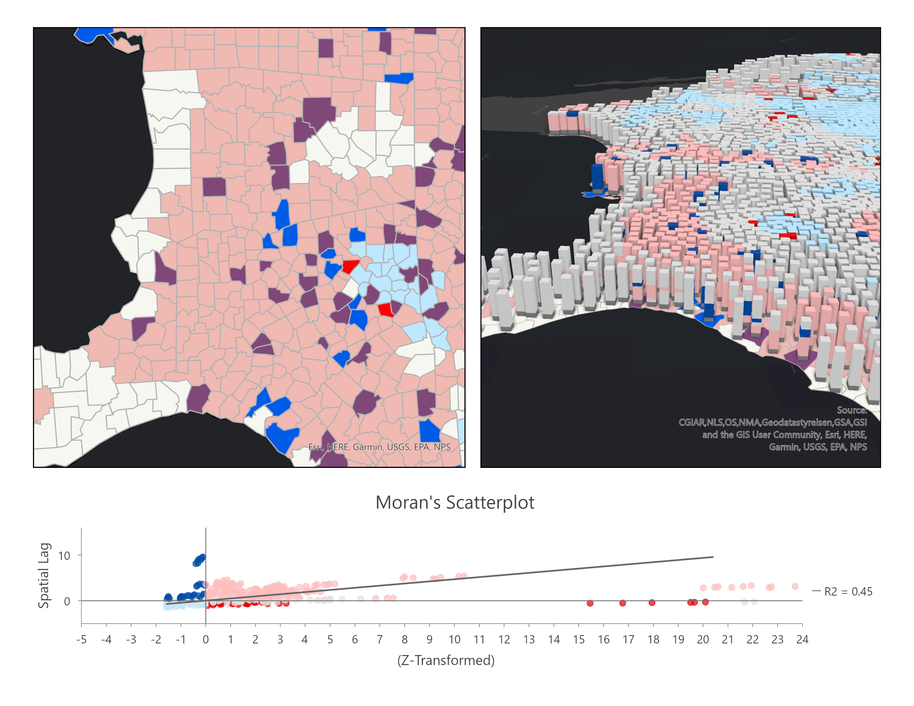
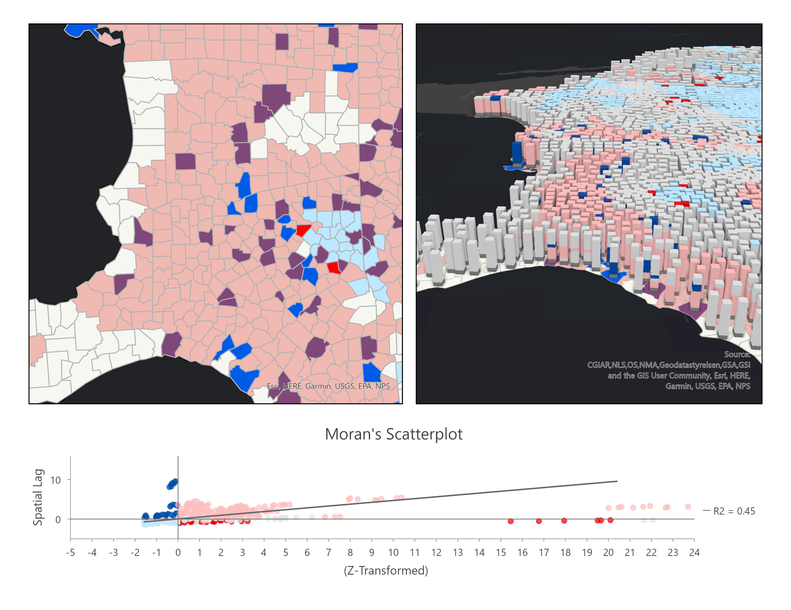
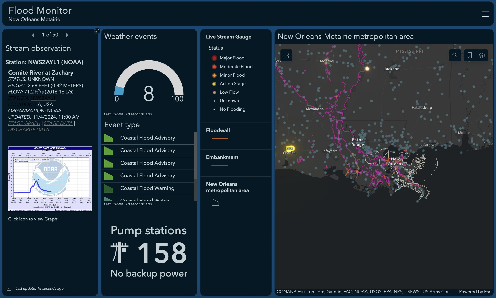
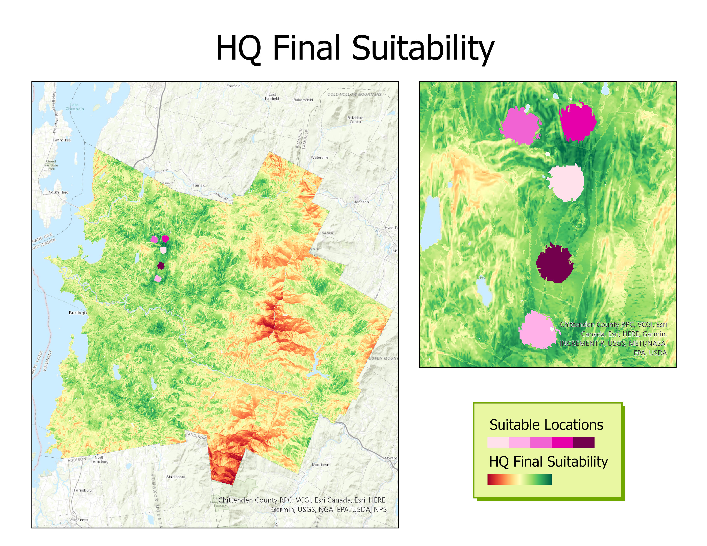

A mapping exercise to assist in outreach efforts for the Supplemental Nutrition Assistance Program (SNAP). A hot spot analysis and an outlier analysis were completed to find meaningful patterns of high and low SNAP participation. Further analysis using space-time pattern mining tools helped determine how these participation rates have changed over time.

A dashboard application for internal flood awareness in New Orleans. This app will allow decision-makers to monitor — nearly in real time — stream flow levels, as well as weather events that could potentially impact flood controls, such as levees, flood walls, and pump stations.

A map outlining five regions that meet specified spacial requirements. A Suitability Modeler was built to select these areas for a company's headquarters.

A map outlining Christchurch, New Zealand and the different methods of transportation.

A map outlining the 2020 election results for each county in the United States. Counties with a voter turnout value below the mean are purple, and counties with a voter turnout value above the mean are green. A prediction model was created to help identify local regions that are expected to have low voter turnout so that specific areas can be targeted for canvassing.
A prospective information systems solution for the local SLO Farmers Market Organization. Includes use case diagrams, data flow diagrams, navigation diagrams, and wireframe mockups.
A marketing plan for VitaSun complete with STP, strategies, and Qualitrics analysis.